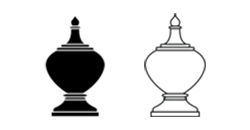

หมากรุกไทย
โคน

เป็นตัวหมากทรงผอบสูงที่มีขนาดรองลงมาจากขุน มี 2 ตัวตอนเริ่มเกม กติกาการเดินโคนมีดังนี้
เดินได้ในแนวทแยงทั้ง 4 ช่องรอบตัว กับด้านหน้าได้อีก 1 ช่อง หรือวิธีการจำอีกแบบคือ 3 ช่องหน้า 2 ช่องหลัง สามารถกินหมากในช่องที่เดินได้

ตำแหน่งการเดิน
ด้านหน้าของโคนแต่ละฝ่ายจะต่างกัน ให้จำว่าโคนแต่ละฝ่ายจะหันหน้าไปยังฝ่ายตรงข้ามเสมอ

การเดินของโคนแต่ละฝั่ง
แบบทดสอบ